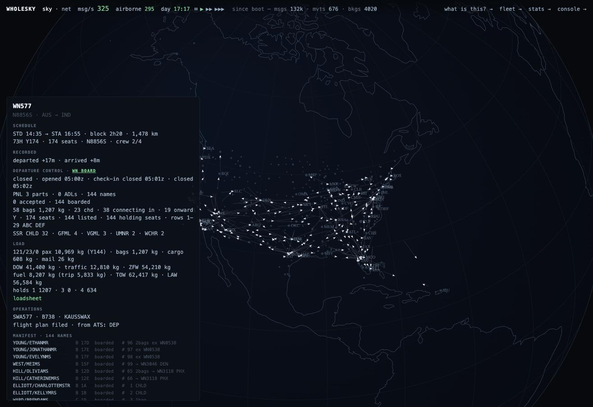

jetway is a messaging gateway for airline and GDS reservation traffic. It terminates carrier links, decodes what arrives on them, keeps passenger name records and answers. It is also a distribution system, a seat inventory, a departure-control system, a datalink and AFTN endpoint, a fare engine and a switch, because wholesky needed each of those to be real, and each is meant to be usable on its own.
If you have run a reservations system, a GDS, a departure-control system or a Type B network, this is the list you would write on the whiteboard. Every row is implemented, tested, and exercised daily by a simulation of the world's schedule.
| domain | messages |
|---|---|
| reservations · Type B | AIRIMP sell, reply, cancel, change · SSR · OSI · OSI/locator exchange · ticket numbers · remarks · received-from |
| reservations · EDIFACT | PAOREQ · PAORES · TKCREQ · TKCRES · CONTRL · PNRGOV |
| distribution · HTTP | NDC OrderCreateRQ · OrderRetrieveRQ · OrderCancelRQ · OrderViewRS |
| availability & schedule | AVS · SSM · ASM · SSIM |
| reservations → airport | PNL (multi-part) · ADL |
| airport → world | PFS · PTM · PSM · ETL · LDM · CPM · BSM · BPM · loadsheet (AHM 560) |
| aircraft & operations | MVT · MVA · DIV · ACARS OOOI (OUT OFF ON IN) |
| air traffic services | AFTN envelope · FPL · DEP · ARR · DLA · CNL · CHG |
| transports | Type B over framed TCP · MATIP (RFC 2351) · EDIFACT over TCP · HTTPS with mutual TLS · file drop |
| records | POST /api/book · GET /api/pnrs · GET /api/pnr/{locator} · POST /api/pnr/{locator}/ticket · /emd · /split · /cancel |
|---|---|
| messages | GET /api/messages · GET /api/message/{id} · POST /api/message/{id}/replay · GET /api/stream |
| selling | GET /api/availability · GET /api/flights · GET /api/journeys · POST /ndc |
| work | GET /api/queues · GET /api/queue/{name} · POST /api/queue/item/{id}/work |
| carriers | GET /api/carrier/{designator}/pnrs · GET /api/carrier/{designator}/inventory · GET /api/insights |
| operating | GET /healthz · GET /readyz · GET /metrics · GET /api/status · POST /api/admin/retire |
Wire syntax is exact; message grammar is a profile. The envelope layers are strict about what they validate, because ISO 9735 and the Type B envelope are universal. What sits above them varies by carrier and bilateral agreement, so those layers are ordered recognisers you replace per link without forking anything. An unknown message still decodes at the syntax layer, so it can be captured, routed and replayed even when nothing above knows what it means.
The teletype format the SITA and ARINC store-and-forward networks carry.
ISO 9735 interchanges carrying IATA PADIS messages such as PAOREQ and PAORES, with CONTRL sent and consumed.
The airline transport for teletype over IP: packet format and the Type B session handshake, for the share of the world that dials in that way.
IATA order messages over HTTP: create, retrieve, cancel and the order view, mapped onto the same record store as the teletype and EDIFACT traffic. Payloads carrying card numbers are refused before capture; there is no encryption at rest.
Availability Status messages as a per-link profile, feeding a cache in which every belief carries its age and where it came from. A status older than the trust window stops being evidence and the booking falls back to asking. Free sale where the cache offers it, a request to the carrier where it does not.
SSM and ASM schedule messages as an extensible profile; SSIM parsing. A cancellation as ASM reaches distribution and the airport, and the bookings under a marketing carrier's code are told under that code.
The passenger name record is an event-sourced projection with optimistic concurrency: every change is an event naming the message that caused it, a write carries the version it read, and a stale write is refused rather than allowed to overwrite what it never saw. A gateway and a carrier can be modifying one record at the same instant; that is normal.
capture ▸ classify ▸ decode ▸ dedupe ▸ apply ▸ queue ▸ respond. Raw bytes are made durable before anything interprets them, so a parser fix can be replayed onto traffic that already failed instead of asking a partner to retransmit. Unrecognised lines become fragments on the record; undecodable messages go to the dead-letter queue with bytes intact. Nothing leaves the system.
Confirmation, waitlist, unable, schedule change, ticketing and divergence queues, with placement by the pipeline, a time-based sweeper for silence (a request nobody answered, a deadline that passed), counts per queue, and an external-publisher seam.
The IROPS engine works the schedule-change queue the way a desk does: the next flights over the same city pair, own metal first, free sale where the cache offers it and a request where it does not, each request awaited until the carrier answers. A confirmed seat drops the dead leg with a real sell and a real cancel on the wire; a waitlist is kept and named; what nothing can carry stays on the queue for a person.
The structure of a filing, and no fare of its own: ATPCO's are licensed, so callers supply a tariff.
Leg-based seat control, the textbook kind; the numbers are the caller's.
The passenger name list at T−180 in as many parts as it takes, the additions and deletions list at T−60, per-passenger elements naming who they belong to (a child, a cabin bag with its own seat), hyphenated ticket numbers, and pagination by rendered lines rather than by item.

What one departure's closure produced, as wholesky shows it: everything here came out of jetway's departure-control, movement and AFTN packages.
One assembly, pkg/node, built by both jetwayd and the scenario suite, so what the tests drive is what the binary runs. Everything under pkg/ is importable, which is how wholesky hosts 518 gateways in one process.
POST /api/admin/retire and jetwayctl retire --before.docs/production-gcp.md.jetwayd the gateway, with three simulated carriers and the console at :8080 by default; relay mode makes it a switch.jetwayctl decode captured.tty for any captured message; jetwayctl retire for retention.jetwayload runs the scenario suite concurrently and reports latency.Most of these formats are defined in paid IATA publications that were not bought. That is not a reason to guess quietly; it is a reason to say which layer is which.
| layer | standing | source |
|---|---|---|
| edifact · CONTRL · matip | specified | ISO 9735, RFC 2351 |
| typeb limits · PDM | specified | IATA's public Type B whitepaper |
| padis | partly | the free PNRGOV implementation guide |
| ndc | specified | public schemas and carrier examples |
| aftn | specified | ICAO Annex 10 Vol II |
| ats | specified | FAA reproductions of Doc 4444 forms |
| inventory | method specified | leg-based nested authorisations; numbers are the caller's |
| dcs load control | method specified | AHM 560/565 arithmetic; representative fleet data |
| mvt · acars · PSM PTM LDM CPM | inferred, closely | OAG tables and verbatim examples; airports' reproductions of the practices |
| airimp · avs · ssim · PFS · ETL | inferred | profiles, not conformance; AIRIMP and SSIM are paywalled |
| fare | structure only | how ATPCO filings and tickets work; the filings are licensed and the package carries none |
The roadmap names each paid document and what its absence costs, so they are one procurement decision rather than six unrelated apologies. The AIRIMP divide message is the most expensive single absence: it is why a split booking cannot be advised to its carriers.